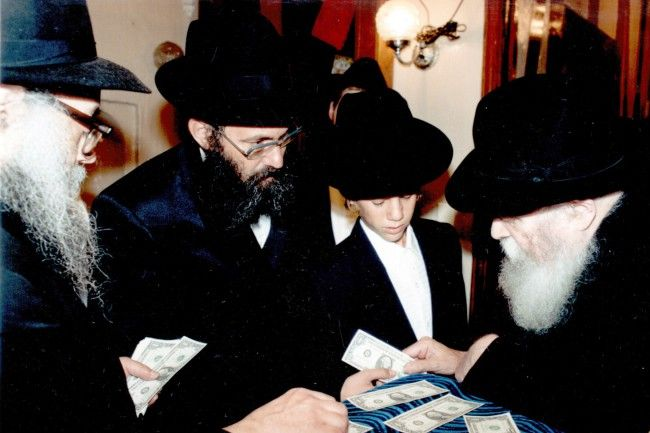

What Keeps Her Going in Her Shlichus
In her great modesty, despite being the wife of a dynamic shliach, she always chose to remain behind the scenes. For the first time, Mrs. Leah Tzik agreed to speak to Beis Moshiach – Ateres Chaya. She gives us a glimpse into over forty years of shlichus alongside her husband, Rabbi Zimroni Tzik, a”h.
By Moran Kurs

The eve of 27 Nissan, nighttime. Rabbi Zimroni Tzik returned from a D’var Malchus class for women. Till the wee hours, he sat and called people back and patiently explained and interpreted the answers they opened to in the Igros Kodesh. He called the last woman at 2:30 in the morning. He knew that she was awake and waiting for his call, so he got back to her.
He did not sleep much and woke up at 5:30, not feeling well. He woke up his wife and said, “Something not-good is going to happen. Wash your hands and write to the Rebbe and call a doctor.” His wife immediately did what he asked. In the meantime, he lost consciousness, and he was sedated and hooked up to life support.
It was first in the hospital that their son opened the answer to the letter that she wrote (Igros Kodesh vol. 11, pgs. 312-313), where the Rebbe writes about a 12-13 Tamuz farbrengen for which the person had prepared a great deal. In the second letter it said that the Baal Shem Tov said he could go up like Eliyahu HaNavi did in a storm wind to heaven; it’s just that he wanted to go through “from dust you came and to dust you will return,” since just as the creation of dust derives from “Atzmus” (the divine Essence), that is where the power of Atzmus is to be found.
At the hospital, the son told about the first letter, about the Chag HaGeula, and skipped the second letter. It was only during the Shiva that he told about the second letter.
A GREAT WOMAN
Rabbi Tzik was relatively young when he passed, 69, and he didn’t stop working till his final moment. He always worked tirelessly but modestly, with simplicity, joy, and no compromising when it came to fulfilling Torah and mitzvos b’hiddur. Much has been written about him, but what hasn’t been written about is the woman, quiet and refined, who enabled and helped him devote his life to the sole remaining shlichus: kabbalas p’nei Moshiach, the Rebbe.
Mrs. Leah Tzik has a long resume from over forty years of shlichus. She has been giving classes on family purity, had a special yechidus with the Rebbe, was in charge of raising funds, and in the early years, until her daughter-in-law joined the family, she arranged and gave all the shiurim to women. Thanks to her shiurim in Chassidus, entire families changed their way of life and became Lubavitch. Her home served as a Chabad House throughout the years; a house of light, chayus and guests.
Her daughter-in-law, Chani Tzik, says, “It is important to know that behind it all is a special woman, a tzadeikes, who subordinated herself to her husband. She followed him to Chabad and allowed him to devote himself to the Rebbe’s shlichus. All he asked of her was to be a full time mother. His mesirus nefesh for the Rebbe’s inyanim is thanks to her. As Rabbi Akiva said, ‘What is mine and yours, is hers.’”
Says Mrs. Leah Tzik, “Hashem granted me the privilege to be a full time mother and to help in the work of shlichus, thanks to and alongside my husband, a dynamic shliach who was completely devoted to the Rebbe and his directives.”
At the start of their shlichus, the Chabad House was their home. Bachurim from the yeshiva for baalei t’shuva that her husband started regularly ate with them. “I felt that I was a mother not only to my biological children but also to other Jews who were drawing close to Chassidus,” she says.
FIRST YECHIDUS
“I remember my first yechidus with the Rebbe,” she says, going back many years. “I asked some questions, including about the shlichus and the woman’s role in u’faratzta. Should the woman be passive, help in the shul, host guests, run things at home as an assistant to the work, or take an active role and go out of the house and initiate new activities.
“The Rebbe answered that today there is hardly a difference between a man and woman in outreach except for modesty. It is important for a woman to be particular that all her activities be done in a modest, refined way. What the Rebbe did tell me is that it is possible to do the work of shlichus even from inside the home, since shlichus is not only out there.
“I felt that the Rebbe spoke to me personally and endowed me with a special power that I did not have previously.”
As soon as she returned home, there were requests and an interest for shiurim. She gave shiurim in halacha and Likkutei Sichos in her home. The number of participants grew and the shiurim moved to the shul in the center of town. Later on, she invited lecturers to give shiurim to women and her job was to oversee all the shiurim for women.
FOCUS ON FAMILY PURITY
As a young woman, she began giving classes on family purity and teaching brides. “Rabbi Miller, the rav of the neighborhood, asked me that in addition to the house calls we made, to give out Neshek and mivtza mezuza and invitations for Shabbos and programs, I should specifically focus on providing explanations for the observance of family purity.”
She was asked to stress the details since there were many women who focused on the main aspects of the halacha of family purity, but did not know that there are many important details that also need to be kept. In the past, there were no kalla teachers and the halacha was transmitted from mother to daughter; consequently, essential details were forgotten.
“From the age of 22, I would sit in the main room (of the mikva) and guide women in how to increase in tahara according to halacha. Often, the woman in charge of tahara would send women to me for instruction.” There were older women who cried that they hadn’t done G-d’s will because of lack of knowledge.
Many women who attended the Torah classes that she gave wanted guidance, especially on topics pertaining to women. “That is how my part of the shlichus slowly built up, like every shlucha – as a psychologist, counselor, mediator, teacher, marriage counselor, etc.
“I learned a lot from my husband about how to help women write to the Rebbe through the Igros Kodesh, what to do if there is no answer – ask the woman whether she wrote everything, is a detail missing. Sometimes, something is missing. The more details, the more precise the answer.
“Throughout the years, I consulted a lot with my husband about what to teach women and how to connect each subject to the coming of Moshiach. My husband lived Moshiach, breathed Moshiach, dreamed Moshiach. Nobody remained apathetic to an encounter with my husband; he impacted everyone.
“I felt how the Rebbe effected within me a tremendous transformation. I never imagined that I would find myself one day as a mentor to women, someone who visits schools and talks to the students about lighting candles, holidays, etc. The encouraging answers in letters I received from the Rebbe, ‘continually increasing with light,’ ‘continue your holy work,’ gave me the strength to continue and work with tremendous energy.”
A WORD FROM THE REBBE
Like any Chabad House, the first Chabad House in Eretz Yisroel had its share of money problems. The debts grew but they received no financial assistance from anyone. Rabbi Tzik and his wife quickly realized that one of them had to raise funds.
“My husband, with all the talents Hashem gave him, was lacking one talent, fundraising. If he was given money, he accepted it, but to ask for money? It was beyond him. So the job fell to me, willingly, since I knew that money wouldn’t be coming through my husband. I mustered all my strength and the Rebbe does not remain indebted to his shluchim.”
Thus, the second time she made a trip to the Rebbe, she raised funds beyond all prior expectations that she ever had of herself.
The Rebbe referred her to the secretary, Rabbi Chadakov, so he could guide her. In addition, the Rebbe also called Rabbi Leibov, director of Tzach, and asked him to help their Chabad House. At that time, friends who knew her from 770 invited her to England and Switzerland and told her they could help her raise money.
“When I had yechidus with the Rebbe, the Rebbe addressed me very warmly. I felt very comfortable, like being with a good, interested father who cares for his children. The Rebbe began by asking about my little children back home. Then he asked about the flight and if all was well, for I was supposed to fly to England first to stay with a friend, and after a few days to fly to Switzerland. In Switzerland, Mrs. Yehudis Rapaport said she would host women for an evening program.
“After I reported this to the Rebbe, with all the details, the Rebbe took out a bundle of 11 dollar bills, gave it to me, and said, ‘This is for doing good things in Switzerland and the Holy Land.’ I guess I wasn’t enough of a Lubavitcher at the time, because I thought the Rebbe hadn’t heard, and so with my great impudence I stressed and repeated, ‘I am also going to England.’ Once again, the Rebbe ignored that and repeated about Switzerland and Eretz Yisroel and blessed me with success.
“I was not aware of how precise the Rebbe is,” apologized Mrs. Tzik. “I was not yet so Chassidish and because the ticket and plan was arranged, I did not consider canceling it. It was only later that I understood why the Rebbe had not mentioned England.”
From the moment she landed in England, problems kept cropping up. The shliach who had committed to help her, suddenly had to undergo an emergency eye operation, and the place she was supposed to stay was not available because guests had arrived; she had to look for another place. “To my great joy, the Rebbe had mercy on me and the small amount of money that I managed to collect in England was just enough for a ticket to Switzerland, so at least I didn’t lose money.
“I learned,” she smiled, “that the Rebbe hears and knows everything. Everything the Rebbe says is absolutely accurate. Every word, glance and sign has a purpose and intention.”
In Switzerland there was a terrific, very successful evening. She got a donation from R’ Akiva Schmerling, owner of the famous chocolate company, who bought dollars of the Rebbe for a nice sum. The rest of the Rebbe’s dollars were sold publicly at gatherings in Eretz Yisroel.
Thanks to the Rebbe’s dollars, they were able to subsist for a long time and that is how she became the fundraiser. “I literally felt how the Rebbe was providing me with kochos beyond my natural abilities. By nature and personality I am quiet and shy and whatever I did was with divine providence from Hashem.”
CLOSURE
Mrs. Tzik told this story: “At the Shiva, I found out the ends of many stories where I had only known the beginnings. Many people came who said he was the center of their lives, guiding and helping them at every stage, including coming to their house to help with shalom bayis. An older woman came without a head covering. With her was a young, religious woman. I assumed that they came to write to the Rebbe through the Igros Kodesh.
“‘Do you know who I am?’ asked the older woman. ‘I am Michoel’s mother.’ Michoel was a 16 year old who had become interested in Chabad through my husband. He’s the boy who put the words to the popular tune, ‘HaRabbi Shlita Melech HaMoshiach Ein Kamocha BaOlam.’ His mother asked, ‘Do you remember that 35 years ago, when Michoel started to commit, I found it very hard. Do you remember that we came to your home to ask your husband to convince Michoel not to do t’shuva?’ I couldn’t forget it; I especially remembered that she had said at the time, ‘I am losing my son.’
“I remember that I immediately reacted and said, ‘G-d forbid! Why? What’s the big tragedy?’
“Unfortunately, her son became sick and she did, in fact, lose him, at the age of 17. It was horrifying and tragic. Boruch Hashem, immediately afterward, she had two more sons, with my husband serving as sandak for one of them.
“She showed me a picture of her sons and said proudly, ‘Boruch Hashem! Both did t’shuva, chareidim! And this is my daughter-in-law. I have also kashered my kitchen and am very happy with the change.’ I was happy to hear this and even more so that she was proud and happy with her children.
“Opposite them sat Mrs. Osnat Lenchner who is a teacher and she said that one of the granddaughters attends the Chabad school in Nes Tziyona. I am grateful to have seen this positive end to the story.”
WHAT KEEPS ME GOING
“For 49 days, from when he suffered the attack until he passed away, I only asked for Moshiach. Now, I want to strengthen everyone. With all the pain and suffering, the Geula is closer than ever and I am sure that we will merit to see it immediately! Hashem takes a soul only when it completes its mission, meaning, the galus needs to end already, since he was more than crazy about Moshiach, he dedicated his life to Moshiach, stubbornly, fearlessly, consistently, above reason. Even if others did not look favorably upon it, he did what needed to be done. If his shlichus ended, that indicates that things are even closer! Otherwise, Hashem would not have taken him.”
“His motto was, ‘What can we do? Only Moshiach!’ I hope I was infected by him… and got enough training,” she swallowed a smile.
“We are waiting for the immediate hisgalus because we all need Moshiach! Hashem too, because the Sh’china is in exile and is suffering as well. This is an auspicious time that all generations have long awaited.
“My husband educated the entire family to be mekushar and to do everything for the hisgalus of the Rebbe. The Rebbe won’t remain in debt and that is my gift, that all the children go in the way that my husband taught them with rock solid faith. May we all already merit only happy times and the greatest joy, the joy of the Geula!
“What strengthens me is the fact that we are shluchim of the Rebbe and the Rebbe holds our hand. And behold, he is coming …
“And really, it is not a matter of ‘what is mine and yours is hers;’ rather, in this case, I say what is mine and yours is his! I thank Hashem and the Rebbe for all the years I’ve lived till now at his side and that we should meet again immediately with the hisgalus of the Rebbe MH”M.”
MY FATHER-IN-LAW
From the perspective of a daughter-in-law:
Mrs. Chani Tzik helps her mother-in-law, Leah, in the “city of Geula,” Bat Yam. Chani, (wife of R’ Chaim, his father’s successor), arrived in Bat Yam a few months after she married (25 years ago) to work together with Rabbi Zimroni and Mrs. Leah Tzik.
“From the moment we arrived here, all the programs have been executed with terrific collaboration. It’s all done together with my in-laws. No word can describe what an impact they have made on all the people with whom they came in contact. I myself would not do anything without consulting and getting approval from the rav, for I knew that he had special heavenly assistance thanks to his limitless bittul to the meshaleiach.”
Over the years, most of the programming for women: Medrashiya (learning center for women), shiurim, gatherings, farbrengens, and in recent years also matza baking for children, became her responsibility.
Mrs. Chani Tzik says that R’ Zimroni considered it very important to hold gatherings for women too, since he saw how the Rebbe attributed great importance to women. As a Chassid who operated out of bittul, it was important to him that gatherings be held for women on special dates. Likewise, the rav set up a radio show, a website, a newspaper, and the Sichat HaGeula weekly, and through these tools of hafatza he always made sure to include the feminine angle in inyanei Moshiach and Geula.
In the Medrashiya, they were very interested in hearing his shiurim on D’var Malchus and maamarim. He knew the material backward and forward. He had broad knowledge and tremendous life experience. Every shiur was conveyed on a very high level and at the same time, he “went down” to the people with details, examples and illustrations. To him, everything was with firmness and simplicity.
He always worked to connect people to the Rebbe and to extricate them from their problems. In the past, in Elul, before he traveled for Tishrei, he would circulate among all the passengers on a routine bus trip, say he was flying to the Rebbe MH”M, and suggest that they write a p’n so he could daven for them.
Until the end of his life, through the website Igros.com and in the offices of the Aguda L’Maan HaGeula in Bat Yam, he would sit with whoever came to write to the Rebbe with patience and tremendous Ahavas Yisroel, like the person was his only child.
“I also helped women with the Igros, but when someone came with a very significant issue, I immediately told her that it was too big for me and referred her to the rav.
“One of the women who came during the Shiva said that she needed to undergo a very critical operation, so she wrote with R’ Zimroni. In the Rebbe’s answer, it said not to do an operation, but the woman countered that that wasn’t possible since the doctor said that if she didn’t do the surgery her life would be in danger.
“The rav banged on the table and said, ‘The danger to life is when you do the opposite of what the Rebbe says!’ In the end, he convinced her not to operate. A few weeks later it turned out that he had saved her life by preventing her from undergoing surgery.”
That was Rav Zimroni, someone with ironclad hiskashrus and a model of truth. He would examine to see what was the right thing in every situation and carried out the king’s wishes uncompromisingly, without being fazed by what people would say. “That’s why they loved to listen to him, because he was real and connected to the meshaleiach; he had the strength and determination to stand firm in the face of every obstacle.”
This interview was conducted right after the conclusion of Shiva, before the outcry about the separate areas for women and women at the event in Tel Aviv became headline news. Interestingly, of all the things that he was highly particular about, Chani chose to mention separating men and women, according to halacha, as something that he took very seriously:
“Separate areas for men and women was very important to him. For example, at the public seder that we held together with them he said, ‘It is not going to happen; everything must be done with separation, and with that we will see blessing.’
“Another of his outstanding traits was humility; he did not seek honor. He did what needed to be done. He did not sit on the dais at gatherings and receive honor. If a table needed to be moved or the floor swept, he would do that too. If he was needed somewhere, he would be there and get right to work, and he never said or felt it was beneath him.
“He never went on excursions or to a hotel. He was busy all day and all night with how to bring about the hisgalus of the Rebbe MH”M.”
“His daughters say that always, after the giant gatherings he arranged, he would pace in the house. When they asked him, ‘What happened? It was great! There were so many people, so many buses came. The content was superb, it was joyous, so special, amazing!’ he would say, ‘But the Rebbe was not nisgaleh! So what was it all worth?’”
“That strong and immutable faith was something that he had in his blood. During hard times, I asked him, ‘How do we go on in galus?’ He would always answer, with a smile and humility, ‘The Rebbe said that we are the last generation of galus and the first generation of Geula. The question is what do you choose – to cry over the last generation of galus or to rejoice over the first generation of Geula.’ He always chose to rejoice. Despite the difficulties and tremendous concealment, he chose to live the Geula, not the galus. You never heard a depressed sigh from him. He always lived the Geula. The rav chose simcha and chayus; with him, everything was so alive.
“May we merit already the hisgalus of the Rebbe MH”M, for which the rav gave his life.”
Beis Moshiach (staff). "What Keeps Her Going in Her Shlichus." Beis Moshiach, no. 1136 (October 11, 2018).